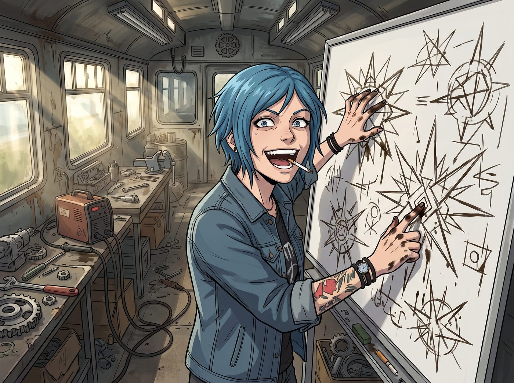
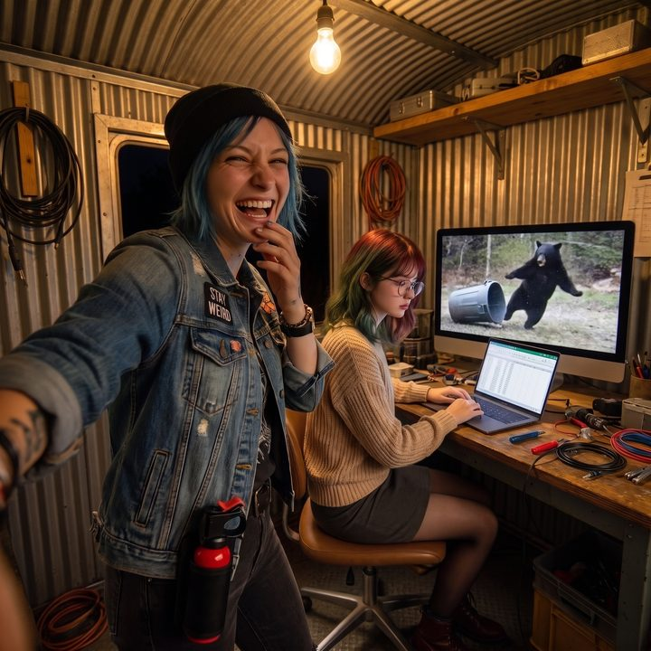

冰水與重卡喇叭


第二天清晨，二號車廂的改裝工坊，已經變成了一個充滿《瘋狂麥斯（Mad Max）》末日廢土風格的作戰會議室。
Chloe 咬著一根沒有點燃的菸，用沾滿機油的手指在白板上畫著極度狂野的設計圖。
「聽好了，女士們。」Chloe 興奮地敲著白板，上面畫滿了各種帶著尖刺的幾何圖形，「為了防止昨天那頭三百磅的『藍莓大盜』再來襲擊我們的垃圾桶，我設計了這套『阿卡迪亞灣防禦矩陣 2.0』。」
「看這裡，這是一排由 V8 引擎廢棄氣門芯焊接而成的倒刺拒馬；這裡，我打算埋設三個從黑市淘來的生鏽捕熊夾；最核心的是垃圾桶上方，我會改裝一個化油器，只要牠敢碰蓋子，就會噴射出兩公尺高的地獄火焰——」
「絕對不行！！！」
Chloe 的「廢土防禦簡報」還沒做完，就遭到了營地兩大巨頭的聯合封殺。
一、聯合封殺
Kate 雙手捂著嘴，滿臉驚恐地看著白板上的捕熊夾和火焰噴射器，眼神裡充滿了對生靈塗炭的痛心：
「Chloe，牠們只是肚子餓了的野生動物，不是來攻打城堡的半獸人！捕熊夾會夾斷牠們的腿，火焰會把牠們燒傷的！上帝教導我們要愛護生靈，我們絕對不能見血！」
「沒錯，Kate 學姐的宗教悲憫在現代法律框架內，同樣具有不可辯駁的合規性。」
Lily 端著熱牛奶，像一個無情的審判官一樣站在 Kate 身邊，推了推圓框眼鏡：
「Chloe 學姐，這種夾腿式陷阱，華盛頓州早在二〇〇〇年就透過公投禁止了。被抓到，您要面對的是刑事責任。」
「更重要的是，如果您在營地引發明火，我們的財產與火災保險會直接拒賠。萬一燒成山火，州政府可以向引發火災的人追討整筆滅火費用。直升機、消防隊、好幾天的撲救，那個數字會讓我們的營地瞬間破產。」
Chloe 拿著白板筆的手僵在半空中。
她看了看滿臉寫著「妳敢見血我就哭給妳看」的 Kate，又看了看滿臉寫著「妳敢放火我就停妳預算」的 Lily。
「所以……」Chloe 挫敗地把白板筆扔在桌上，煩躁地抓著藍色的頭髮，「不能見血，不能用火，不能用尖刺。妳們乾脆讓我在垃圾桶旁邊給那頭熊建一個托兒所，然後請牠喝下午茶好了！老娘可是個硬核技師，妳們現在是要逼我造一個幼兒園級別的充氣柵欄嗎？！」
這就是「流浪漢股份有限公司」的日常。哪怕你是個再狂野的龐克，在天使的道德綁架和黑魔法師的行政碾壓面前，也只能乖乖吃癟。
Max 坐在沙發上，看著 Chloe 那副生無可戀的憋屈模樣，忍不住笑出了聲。
「放棄妳的《瘋狂麥斯》幻想吧，Chloe。用妳的聰明才智想想，有沒有什麼是不流血、不違法，但依然很『硬核』的辦法？」
二、辣椒與槍套
Chloe 癱在椅子上，盯著天花板翻了個白眼。
「那辣椒水呢？」她不死心地坐起來，「不流血、不起火。我在噴頭裡灌一桶辣椒素，讓那頭熊知道什麼叫加州的特辣墨西哥捲餅！」
「自動噴灑辣椒素，超出了這類產品的標示用途。」Lily 平靜地說，「而且感應器分不出是熊、是半夜去倒廚餘的 Kate 學姐，還是林道那頭老夫婦家走失的狗。」
Kate 倒抽了一口涼氣，下意識地往後退了一步。
「不過，」Lily 話鋒一轉，「手持式的防熊噴霧，是完全合法的。它就是高濃度的辣椒素，而且是野生動物管理局最推薦的防身工具。前提是：由人拿在手上，遇到熊的時候，對著牠噴。」
Chloe 的眼睛亮了。
「妳是說……老娘可以隨身帶一把合法的辣椒槍？」
「是的。我會幫您申購一罐，附一個腰掛式槍套。」Lily 點點頭，「使用前，請先看完說明書。」
「成交！」Chloe 一拍大腿，心情瞬間好了一半。
然後，她的目光落在了角落裡一台為了給輪胎打氣而買的工業級空氣壓縮機，和一台洗車用的高壓清洗機上。
一個極度惡劣、完全符合龐克精神，又不流血、不違法的靈感，在她的腦海中炸開了。
「不能見血，對吧？」Chloe 猛地坐直身體，眼睛裡重新燃起了那種搞事的危險光芒，「不傷牠一根毛，完全符合動物保護法。但沒有哪條法律規定，我不能對一頭熊進行『物理與精神的雙重震撼教育』吧？」
三、花園灑水器
傍晚時分，Chloe 滿身機油、得意洋洋地向所有人展示她的新傑作。
沒有地刺，沒有火焰。
垃圾桶的旁邊，赫然矗立著一座「巨型水砲塔」。外殼是用生鏽鋼板焊成的砲塔，正面噴漆畫著一個咧嘴大笑的骷髏頭，頂上還架著一根純裝飾用的、粗得嚇人的假砲管。整台機器看起來像是能一砲轟平一輛坦克。
「女士們，歡迎見識『非致命性 H2O 龐克驅逐系統』！」Chloe 拍了拍那根假砲管，「我把 Lily 那個光電感應器，接上了這台高壓清洗機，水壓三千 PSI，裡面裝滿了攝氏二度的冰水。旁邊再外接一個從報廢重型卡車上拆下來的氣動喇叭！」
「請把水壓調下來，Chloe 學姐。」
Lily 看了一眼壓力錶，語氣平靜，卻沒有商量的餘地。
「三千 PSI 的水柱在近距離會割傷皮膚，打到眼睛可能直接把牠打瞎。那已經不是驅離，是傷害。」
Kate 在旁邊用力點頭。
Chloe 張了張嘴，最後不甘不願地蹲下去，把壓力閥一路轉到了最低。
「……這下好了，」她站起來，嘟囔著，「這根本就是一台花園灑水器。」
「是的。」Lily 點點頭，「這正是野生動物管理局推薦的那一種。又冷又煩，但不會受傷。」
「還有那個喇叭，」Lily 補充道，「請把它朝向森林，音量控制在一百二十分貝左右。這個音量夠嚇跑一頭熊，也不會把林道那頭的老夫婦吵醒。」
Chloe 翻了個白眼，但還是照做了。
就連一直在旁邊敷面膜的 Victoria 都忍不住探出頭：「雖然這玩意兒長得很醜，但如果能保證我晚上睡覺不被野獸吃掉，我允許它存在於我的視線邊緣。」
四、實戰
當天深夜。
所有人都屏住呼吸躲在車廂裡，透過監視器畫面死死盯著垃圾桶的方向。
那只是一台很普通的家用安全攝影機，靠鏡頭旁一圈看不見的紅外線燈照明，夜裡的畫面是一片黑白的雪花顆粒。垃圾桶、圍籬和那座骷髏頭水砲塔，都只剩下灰濛濛的輪廓。
「牠真的會回來嗎？」Max 小聲問，「垃圾桶都鎖上了，廚餘也沒放出去了。」
「會。」Lily 盯著螢幕，「熊一旦在一個地方吃到過東西，就會記住那個地點，反覆回來確認。昨天那團藍莓麵團，已經讓牠把這裡登記成了一個可靠的補給站。」
凌晨兩點，畫面邊緣的林子裡，亮起了兩個白點。
那是黑熊的眼睛，在紅外線下反著光，像兩盞小燈一樣，一晃一晃地朝垃圾桶靠近。
那頭龐大的黑熊，果然又來了。
營地四角的聲光警報照例響起。頻閃燈一亮，監視器畫面瞬間被打成一片刺眼的白，什麼都看不見；等燈光一熄，那兩個白點還在原地。
但這一次，牠只是抖了抖耳朵，停頓了兩秒，然後繼續慢吞吞地朝垃圾桶走過去。
「……牠習慣了。」Lily 的聲音裡，第一次出現了一絲細微的挫敗。
「三、二、一……」Chloe 握緊了拳頭。
當黑熊的爪子踏入紅外線感應區的瞬間——
「嘩——！！！」
「叭——————！！！！」
一道冰冷刺骨的水柱精準地澆在了黑熊的屁股上；與此同時，那顆重卡氣動喇叭朝著森林，發出了猶如火車進站般的恐怖巨響。
那頭三百磅重的黑熊，爆發出了一聲破音的哀嚎。
牠在原地嚇得跳起了足足有一公尺高，然後一邊甩著身上的冰水、一邊連滾帶爬地衝進了森林裡，沿途甚至還撞斷了幾根小樹枝。
這一次，牠頭也沒回。
五、澆花水管
「哈哈哈哈哈！看到了嗎！」Chloe 在車廂裡笑得滿地打滾，和 Max 興奮地擊了個掌。
然後她爬起來，大步走到 Lily 的工作站前，雙手撐在桌上，居高臨下地看著她，臉上寫滿了這輩子最燦爛的得意：
「實習生，妳花預算裝的那套高科技聲光矩陣，被一頭熊當成了背景音樂。而老娘用廢鐵和一根澆花水管拼出來的破玩意兒，一擊就讓牠滾回了森林。」
Lily 沉默了三秒鐘。
然後，她推了推圓框眼鏡，用一種極度嚴謹的語氣說：
「……根據今晚的實測數據，在第二次接觸中，您的系統有效，我的系統無效。我會把您的裝置列為營地驅離系統的主要設備，我的聲光警報降為輔助。」
「聽到了沒有，Max！」Chloe 狂笑著轉過身，腰上那個剛裝好的防熊噴霧槍套跟著晃了一下，「她承認了！黑魔法師親口承認了！」
Max 看著監視器回放裡黑熊那滑稽的逃跑姿勢，笑得眼淚都出來了。這頭熊，這輩子大概都不會再靠近這個垃圾桶了。
她舉起相機，對著笑得像個剛打贏了世界大戰的 Chloe，和她身後那個一臉嚴肅地在表格上修改設備等級的 Lily，按下了快門。
相紙吐出，Max 咬著筆蓋，在背面寫下：
『規則第八十一條：永遠不要試圖在天使和黑魔法師面前玩弄血腥與暴力。但如果你能把《瘋狂麥斯》的破壞慾，轉化成一台長得像坦克、噴出來卻是澆花冰水的機器，你依然是這個營地裡最硬核的龐克工程師。P.S. 她腰上那罐防熊噴霧，已經被她取名叫「特辣墨西哥捲餅」了。』